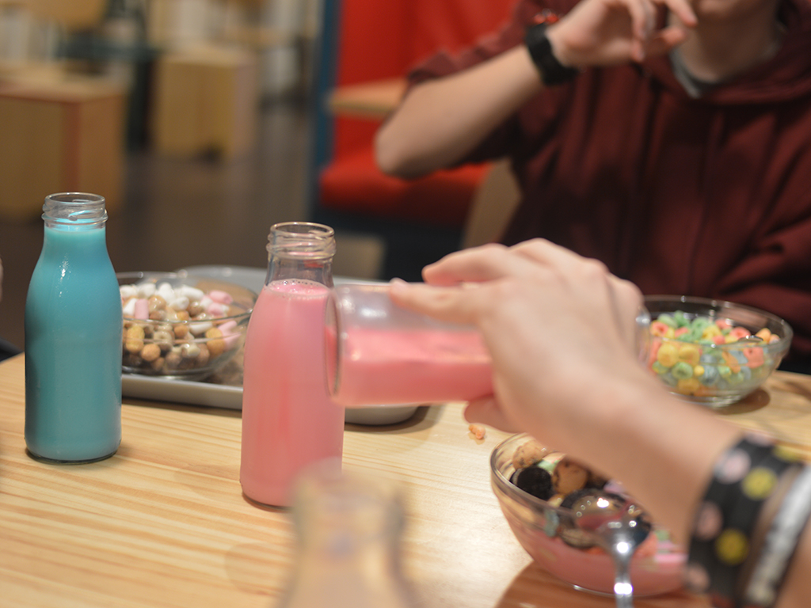
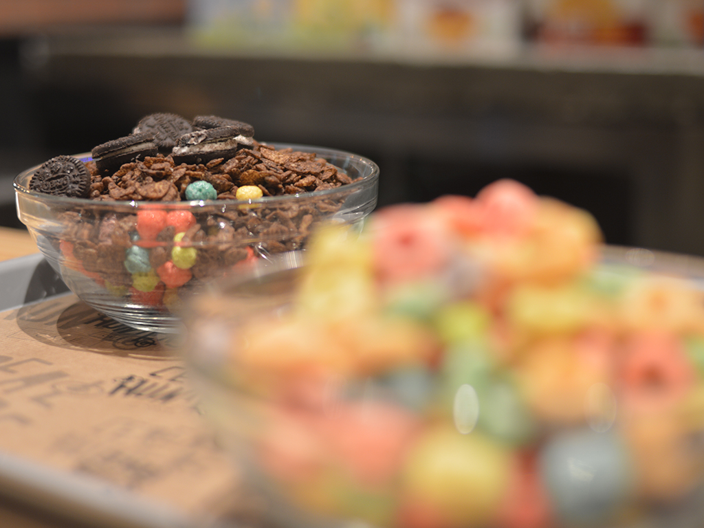
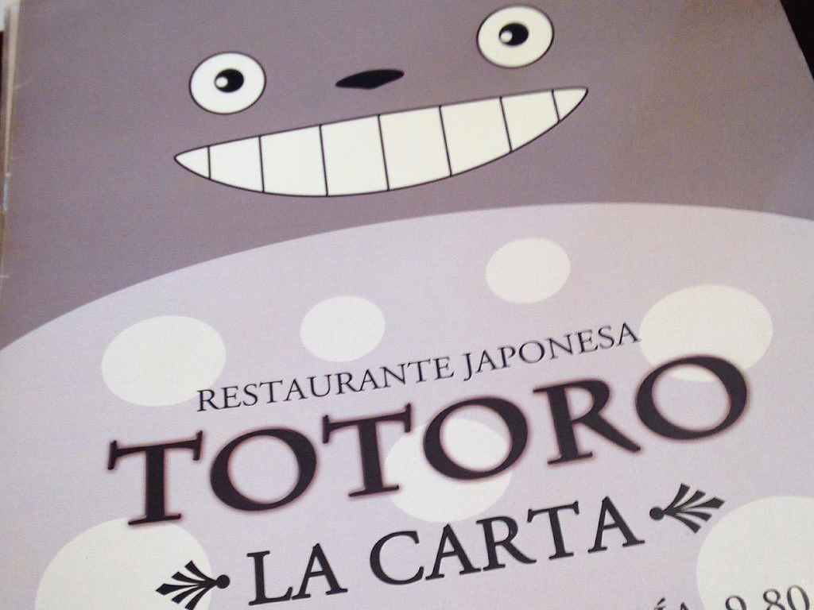
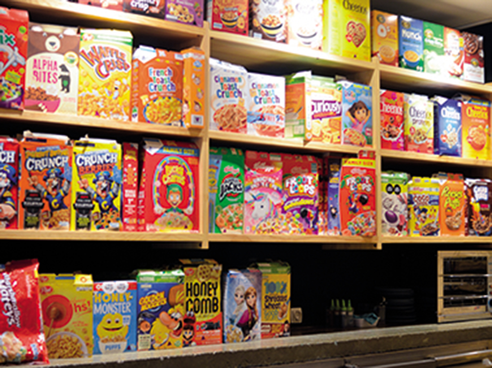
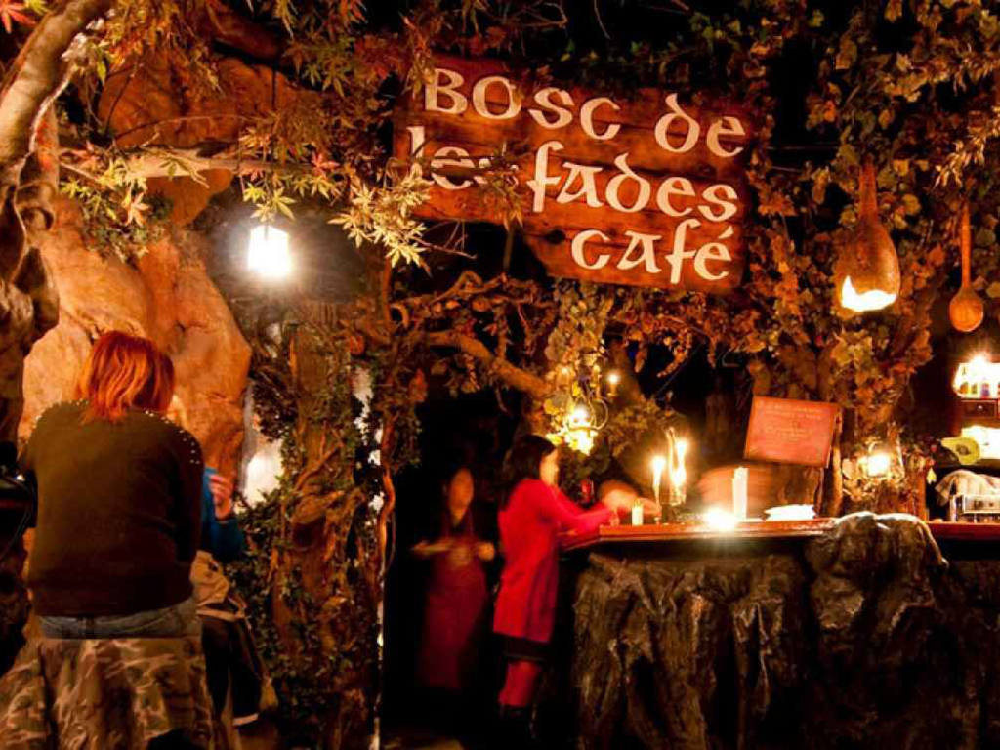
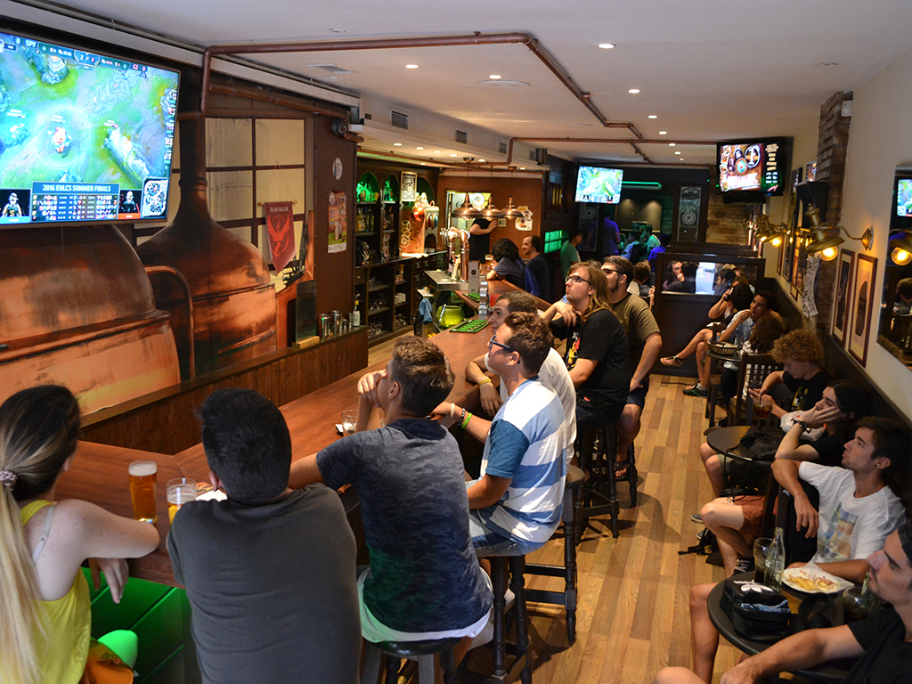
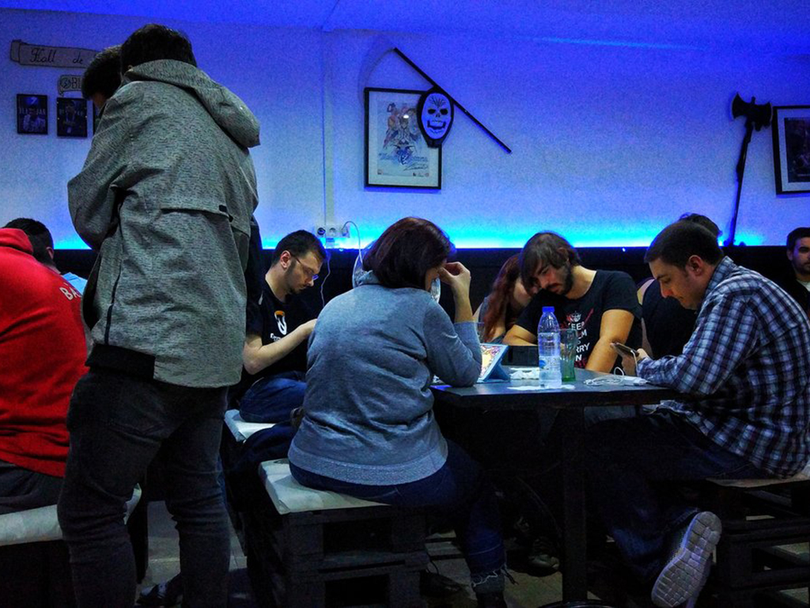
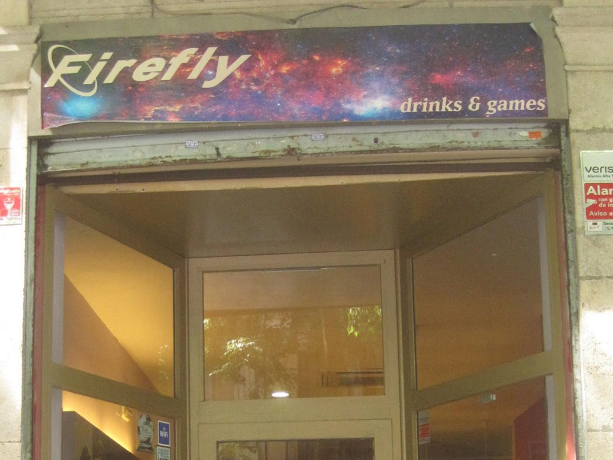
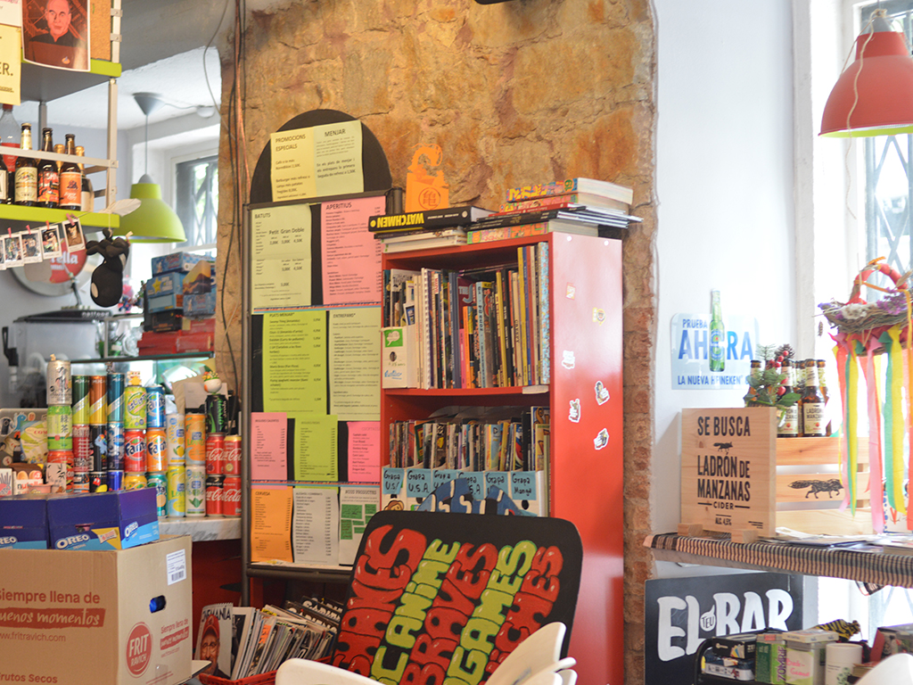
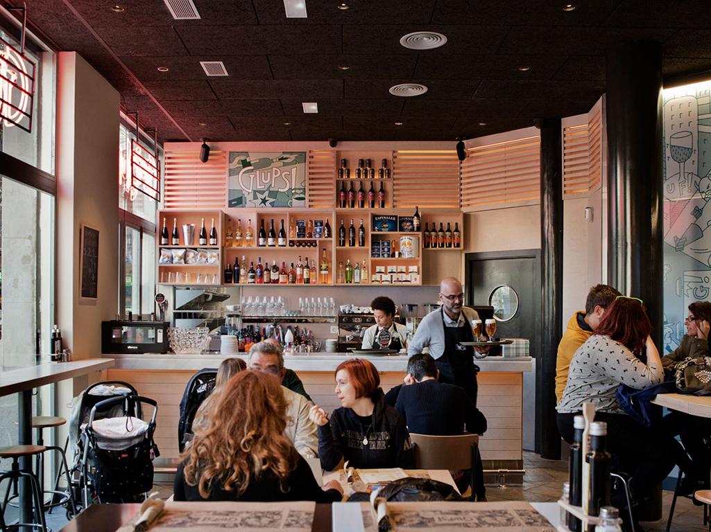

Dinar amb La Pepa
Aquesta és La Pepa, ella és l'àvia de FrikiZone (a més de la nostra estimada mascota), que es preocupa per cadascun dels nostres lectors. Us cuidés com una avuelita de veritat i voldrà com a tal. Aquí et mostrarem els exòtics restaurants i bars més friquis de Barcelona. Vés amb compte quan llegeixis els seus menús, ja que a la nostra redacció els sonava l'estómac com si Chewaka estigués parlant només amb llegir una mica.
 Totoro
Temàtica d'animació nipona juntament amb servei bufet amb un cost de 15 € per persona, en aquest preu entren el menjar i beguda que pugueu omplir en aquest forat sense fons anomenat com estómac. Recomanem reservar ja que està molt sol•licitat.
Cereal Hunters Café
Aquí podràs degustar diferents tipus de cereals, tant com del país com d'importació. Una de les seves majors característiques és que pots enfornar que et donin llet de colors. Pots fer tu mateix les mescles i t'assegurem que poden arribar a ser molt acolorides.
El Bosc de les fades
Visualment només es pot descriure com preciós, sents que aquestes dins d'una taverna deborada per la natura i la màgia.
Afterlife eSports Gamer Bar
Una de les primeres coses que t'assegurem que t'encantarà serà llegir cadascuna de les comandes, a més que t'entre una fam brutal en llegir la descripció riuràs amb les picades d'ullet que deixen anar a la cultura friki. Podràs gaudir dels eSports amb retransmissió en directe.
Blitzbar
Menjar, beguda i videojocs. ¿Que més es pot demanar? Aquest bar aquesta provisionat amb diversos videojocs, aquests els pots gaudir amb amics o clients del bar, vam aprofitar per dir-te que aquesta segona opció és bona per conèixer gent nova i fer amics.
Firefly drinks & games
En aquest bar podràs gaudir d'una beguda refrescant al costat dels teus amics mentre jugueu a jocs de carta o de rol. Perfecte per partides divertides i interessants al costat dels teus amics, i si et veus capaç, sempre pots competir al costat d'altres clients de l'establiment.
Len 's còmic cafè
En aquest lloc pots gaudir de la calma de la lectura mentre et prens alguna cosa, sol o en companyia. Envoltat de pòsters de famoses animacions japoneses, Len 's còmic cafè és perfecte per a una bona estona de descans.
Glups!
Després de les teves compres a la Norma Còmics pots descansar en el seu nou espai gastronòmic. Segons que dies es fan esdeveniments que són molt interessants.
